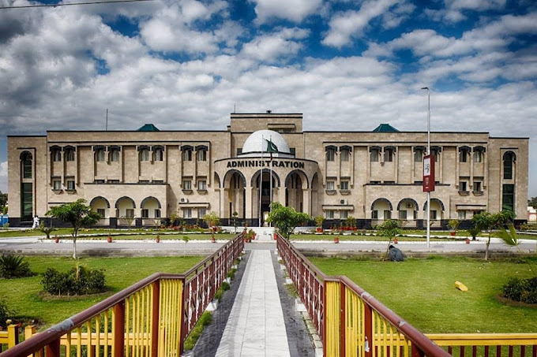
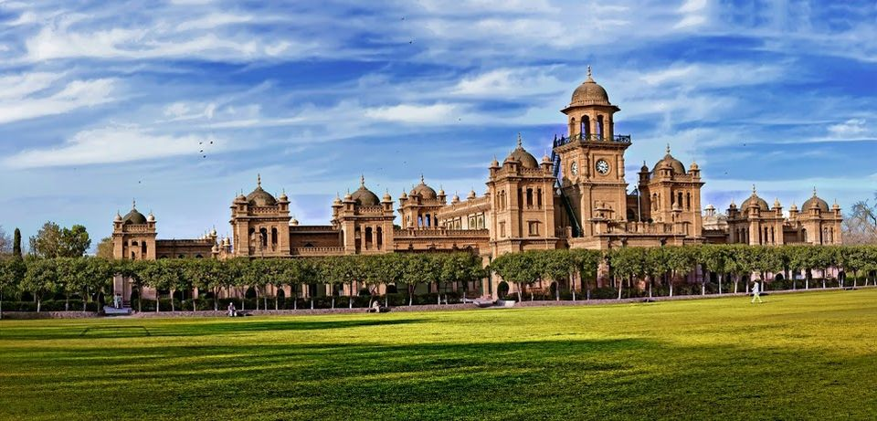
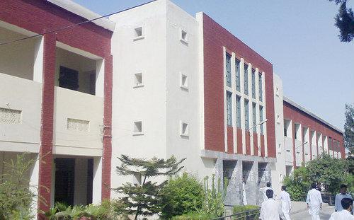
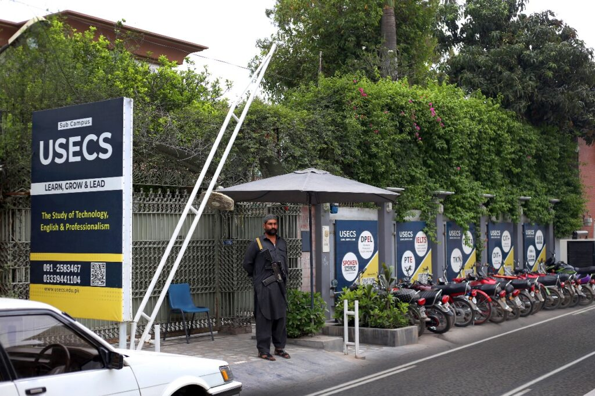

A highly skilled and dedicated professional with over six years of experience in Machine Learning, Deep Learning, Image Processing, BioInformatic and Cluster Computing. Since 2018, has demonstrated expertise as a Python developer, evolving into a full-stack developer with a deep understanding of both frontend and backend technologies. Known for being a hardworking individual with a passion for continuous learning consistently strive to stay at the forefront of technological advancements. Adept at solving complex problems and delivering high-quality solutions, I'm committed to driving innovation and efficiency in every project they undertake.
Master of Studies in Computer Science- Abdul Wali khan University Mardan, Pakistan (2019-2022)
Bachelor of Science in Computer Science - Islamia College Peshawar, Pakistan (2014-2018)
Faculty of Science in Engineering - Government College Peshawar, Pakistan (2012-2014)
𝓢𝓮𝓹𝓽𝓮𝓶𝓫𝓮𝓻, 2022 - 𝓢𝓽𝓲𝓵𝓵
𝓙𝓾𝓷𝓮, 2017-𝓐𝓾𝓰𝓾𝓼𝓽, 2018
🥇I hold an English language certification from University of Spoken English, a leading provider of English language education. The certification demonstrates my proficiency in spoken English, reading, writing, and comprehension, equivalent to the level of a native speaker. It was awarded after successfully completing a rigorous program accredited by the Higher Education Commision, Pakistan and recognized internationally for its high standards in English language instruction.
